Fun with Filters and Frequencies
Almost everything on this page is one operation, convolution, applied with different kernels. A small difference kernel finds edges. A Gaussian keeps the slow changes in an image and throws away the fast ones, and subtracting it keeps the fast ones instead. Once an image can be split into slow and fast parts like that, the parts can be boosted, swapped between images, or joined along a seam one band at a time.
1.1 Convolution from scratch
1.2 Finite difference operator
1.3 Derivative of Gaussian, and gradient orientation
2.1 Sharpening
2.2 Hybrid images
2.3 Gaussian and Laplacian stacks
2.4 Multiresolution blending
What I learned
1.1 Convolution from scratch
Convolving an image f with a kernel h means that every output
pixel is a weighted sum of the input pixels around it, with the kernel supplying the weights
after being flipped in both directions:
(f * h)[i, j] = Σu,v h[u, v] f[i − u, j − v]. Without
the flip the same loop computes correlation instead. For symmetric kernels such as a box or
a Gaussian the two are identical, which is exactly why the flip is easy to forget and hard to
catch. For Dx = [1, 0, −1] it matters: convolution gives
f(x+1) − f(x−1), correlation gives the negative of that.
Pixels near the border need neighbours that do not exist. I pad the image with zeros so the output keeps the input's size ("same" mode). I wrote three versions:
- Four loops. Two over output pixels and two over kernel taps, one multiply-add at a time.
- Two loops over pixels. For each output pixel, cut out the window under the kernel and take one vectorised weighted sum.
- Two loops over kernel taps. The same sum reorganised: each tap adds a weighted, shifted copy of the whole padded image, and a shifted copy is just an array slice. This is still two for loops, but they run 81 times for a 9×9 kernel instead of once per pixel.
def zero_pad(image, kh, kw):
"""Pad with zeros so a kh x kw kernel centred on any pixel stays in bounds."""
top, left = kh // 2, kw // 2
bottom, right = kh - 1 - top, kw - 1 - left
h, w = image.shape
padded = np.zeros((h + top + bottom, w + left + right), dtype=np.float64)
padded[top:top + h, left:left + w] = image
return padded
def conv2d_four_loops(image, kernel):
"""Two loops over output pixels, two loops over kernel taps."""
image = np.asarray(image, dtype=np.float64)
# Flip in both axes: convolution is correlation with the flipped kernel.
k = np.asarray(kernel, dtype=np.float64)[::-1, ::-1]
kh, kw = k.shape
h, w = image.shape
padded = zero_pad(image, kh, kw)
out = np.zeros((h, w))
for i in range(h):
for j in range(w):
acc = 0.0
for u in range(kh):
for v in range(kw):
acc += k[u, v] * padded[i + u, j + v]
out[i, j] = acc
return out
def conv2d_two_loops(image, kernel):
"""Two loops over output pixels; the kernel sum is one vectorised dot product."""
image = np.asarray(image, dtype=np.float64)
k = np.asarray(kernel, dtype=np.float64)[::-1, ::-1]
kh, kw = k.shape
h, w = image.shape
padded = zero_pad(image, kh, kw)
out = np.zeros((h, w))
for i in range(h):
for j in range(w):
out[i, j] = np.sum(padded[i:i + kh, j:j + kw] * k)
return out
def conv2d_kernel_loops(image, kernel):
"""Also two loops, but over kernel taps instead of pixels.
Each tap contributes weight * (the padded image shifted by that tap), and a
shifted image is a single array slice. The Python loop now runs kh*kw times
(81 for a 9x9 box) instead of h*w times (hundreds of thousands), which is
why this version is close to scipy in speed.
"""
image = np.asarray(image, dtype=np.float64)
k = np.asarray(kernel, dtype=np.float64)[::-1, ::-1]
kh, kw = k.shape
h, w = image.shape
padded = zero_pad(image, kh, kw)
out = np.zeros((h, w))
for u in range(kh):
for v in range(kw):
out += k[u, v] * padded[u:u + h, v:v + w]
return out
Does it match scipy?
I compared all three against
scipy.signal.convolve2d(f, h, mode="same", boundary="fill", fillvalue=0), first on
a random 37×51 image with a random, deliberately asymmetric 5×7 kernel, so
that a missing flip could not hide. The largest absolute differences were 5.3×10−15 (four loops),
5.3×10−15 (two loops over pixels) and 5.3×10−15 (loops over taps): floating point rounding
and nothing else. As a check that the test can fail, running the pixel-loop version with the
flip removed gives a maximum error of 3.13. On the real image and the three kernels
below, every version agrees with scipy to within 2.3×10−15.
Runtime
| kernel | four loops | two loops (pixels) | two loops (taps) | scipy |
|---|---|---|---|---|
| 9×9 box | 4.05 s | 634.7 ms | 22.9 ms | 29.4 ms |
| Dx | 197.4 ms | 594.8 ms | 2.4 ms | 2.2 ms |
| Dy | 224.4 ms | 592.7 ms | 1.7 ms | 4.0 ms |
For the 9×9 box the four-loop version is about 138 times slower than
scipy, and looping over pixels with a vectorised inner sum only brings that down to about
22 times. The cost is not the arithmetic, it is how many times the Python
interpreter goes round a loop: once per pixel is already a few hundred thousand trips. The
three-tap difference kernels make the point from the other side. There, four loops
(197.4 ms) beat two loops over pixels (594.8 ms), because calling np.sum on a
three-element window costs more than three plain Python multiply-adds. Looping over taps
instead of pixels makes the Python loop tiny and leaves the per-pixel work to numpy, and it
lands in the same range as scipy, which does the whole thing in compiled code.
Results on my portrait
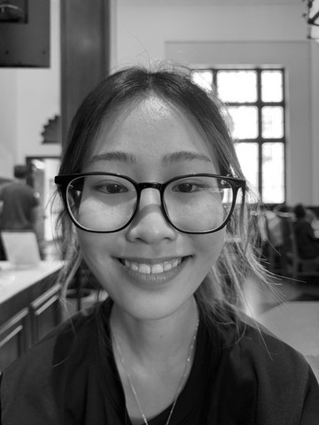
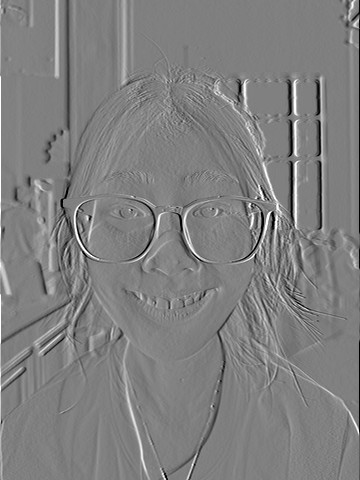
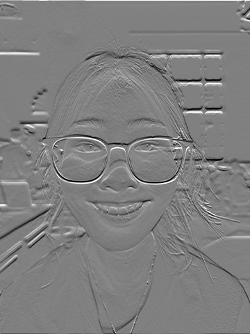
The portrait is the one from my Project 0 page. Dx lights up the vertical parts of the glasses frame and the window mullions and ignores horizontal edges; Dy does the reverse, with the eyebrows and the top and bottom of the frames. The box filter does the blurring job, but it is a cruder low-pass than a Gaussian: its frequency response has sidelobes, so some fine detail leaks through instead of fading out smoothly.
Boundaries
Zero padding treats everything outside the picture as black. Where the image is bright at
its edge, a dark frame appears: along the top row, 36 of the 81 pixels in each 9×9
average are padding zeros (56 at the corners). Along the top of the portrait over the bright back wall, the first
output row averages 0.35 with zero fill, against 0.63 for the actual pixels.
Scipy's boundary="symm" mirrors the image outwards instead and gives
0.63. So for the rest of the project I call convolve2d with
boundary="symm": a mirrored border has no jump in it, so it creates no fake edge
for a derivative to find and no dark rim after a blur. My own implementations stay with zero
fill, since that is what the part asks for.
1.2 Finite difference operator
Convolving with Dx and Dy approximates the partial derivatives
∂f/∂x and ∂f/∂y. Together they form the gradient, a small arrow at every
pixel pointing uphill in brightness, and its length
√(gx2 + gy2) says how steep the
change is regardless of its direction. Thresholding that length gives an edge map.
One fix before any of that. The course's cameraman.png is a
540 × 542 RGBA file with a partly transparent white frame: 7 rows on top, 1
at the bottom, 1 column on the left and 5 on the right. Left in, the frame
differentiates into a bright rectangle around the whole edge map (first image below). The
code trims every outer row and column that is at least 99% white, leaving 534 × 534 pixels.
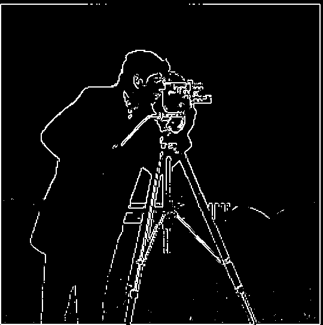
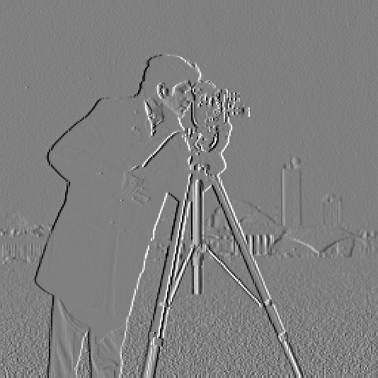
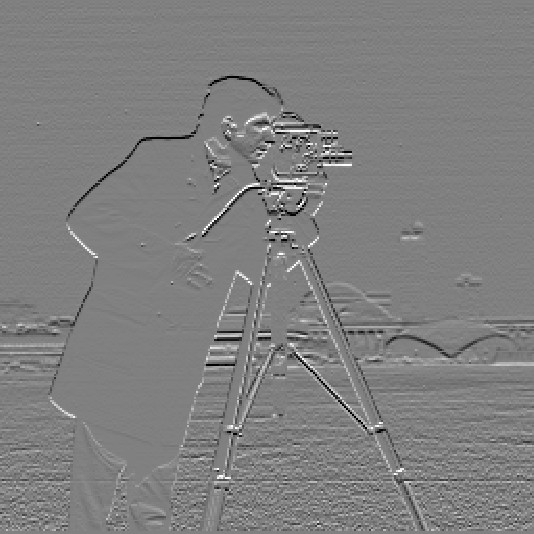
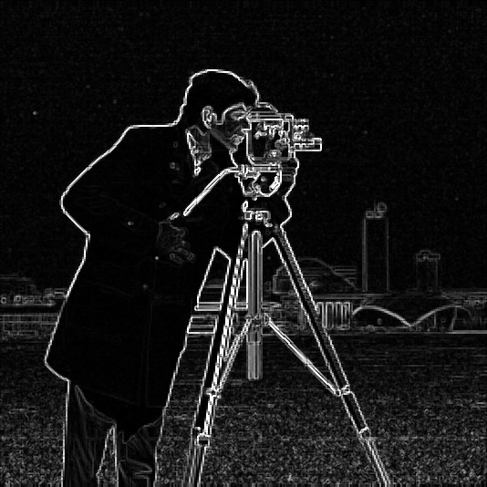
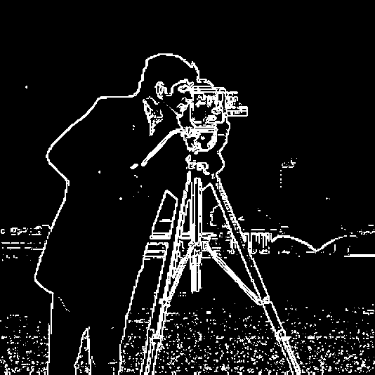
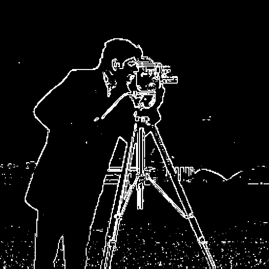
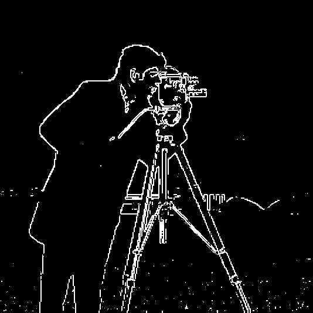
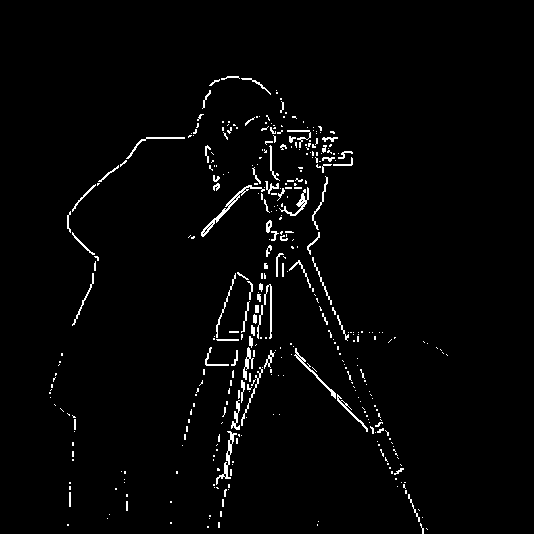
Intensities run from 0 to 1, so a magnitude of 0.3 means brightness changes by about 0.3 across three pixels. At 0.25 and below the grass fills with speckle: its texture has real pixel-to-pixel contrast, and the difference operator cannot tell texture from an edge. At 0.40 the camera's tripod legs start to break into dashes and the distant buildings are gone. I chose 0.30, which marks 3.7% of pixels. The trade-off I accepted: a few specks of grass survive in the lower left and the faint buildings on the horizon are only partly there. Pushing the threshold higher to remove the specks costs real outline of the man and the tripod, which I care about more. No single threshold gets both, because the noise and the faint edges have similar gradient strength. That is the problem the next part fixes.
1.3 Derivative of Gaussian (DoG) filter
Differentiation amplifies whatever changes fastest, and pixel noise and fine texture change
fastest of all. Smoothing first removes them before the derivative sees them. I build a 2D
Gaussian with σ = 2 by taking the outer product of
cv2.getGaussianKernel(13, 2) with its own transpose. The size follows
the usual rule of about 3σ on each side of the centre, which keeps over 99.7% of the
weight.
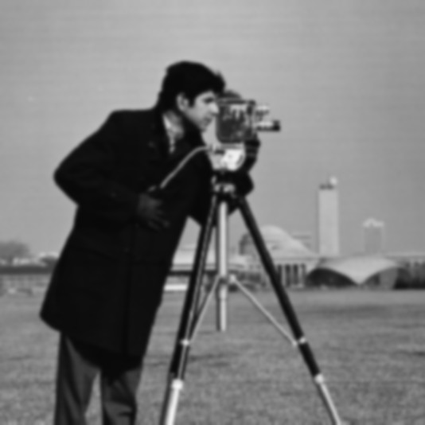
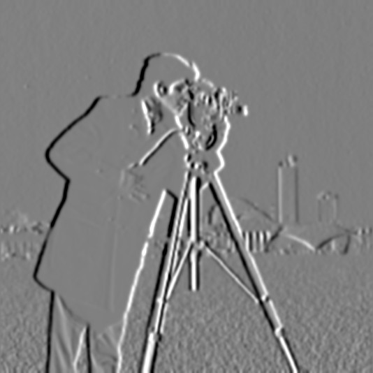
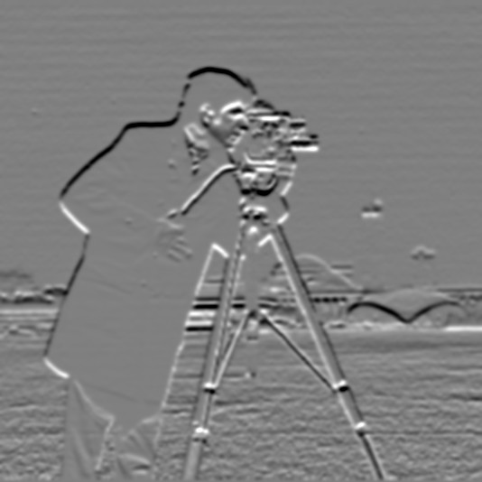
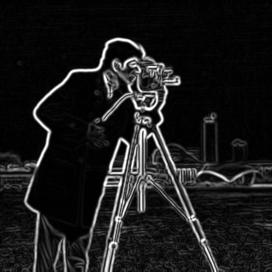

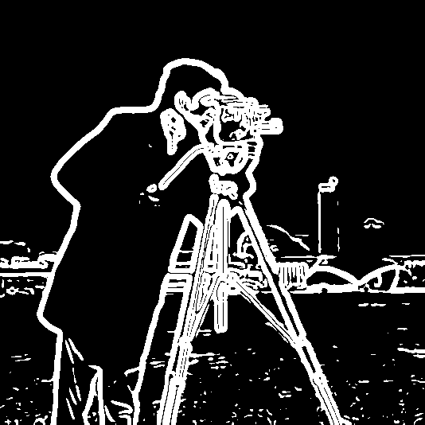

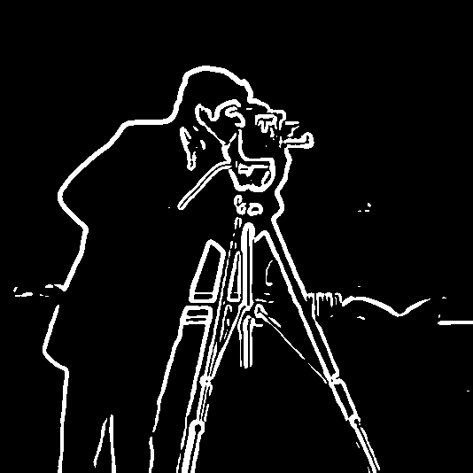
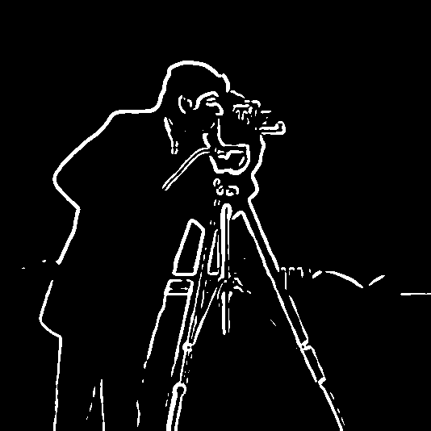
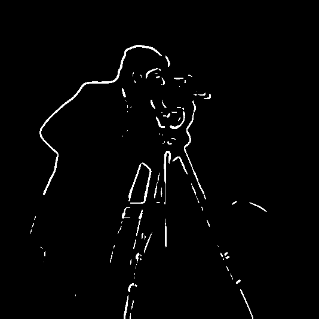
What changes compared with 1.2. The noise is gone: at a threshold that still keeps the buildings on the horizon, the grass is almost clean, which no threshold could manage on the raw image. The edges are also continuous rather than broken into dashes, since the blur spreads each edge's response over several pixels and bridges small gaps. The price is that edges are thicker and less precisely placed: a step edge now produces a ramp of gradient several pixels wide, so the binary map draws a band rather than a line, and details closer together than roughly σ merge. The threshold has to come down too, from 0.30 to 0.07, because blurring spreads the same brightness step over a wider distance and lowers the peak slope. I chose 0.07 because it keeps the horizon buildings while leaving only a few isolated specks in the grass; 0.10 already starts to drop the buildings.
One convolution instead of two
Convolution is associative, (f * G) * Dx = f * (G * Dx),
so the blur and the difference can be merged into a single derivative-of-Gaussian kernel
before touching the image. Convolving the 13×13 Gaussian with the 1×3
Dx in "full" mode gives a 13×15 kernel: a positive lobe next to a
negative one, a smoothed version of [1, 0, −1].
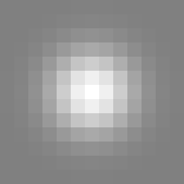
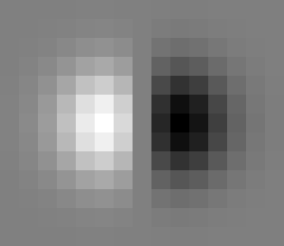
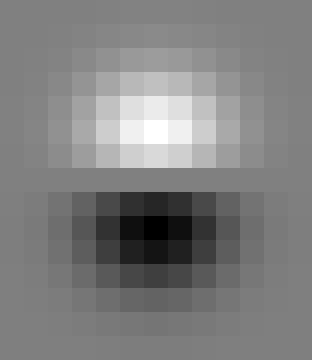
Applying the two DoG filters directly to the image gives the same gradients as blurring and then differencing: the largest difference anywhere in the image, border included, is 1.0×10−15, and the two binary edge maps agree on 100.00% of pixels. I expected disagreements within a few pixels of the border, since mirroring a blurred image is not obviously the same as blurring a mirrored one. They turn out to be identical here because the Gaussian is symmetric: blurring a mirror-extended image gives a result that is itself mirror-symmetric about the edge, so it does not matter which is done first.

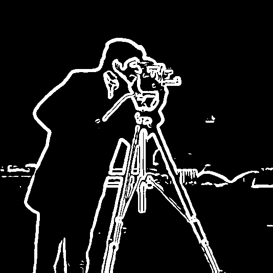
Bells and whistles: gradient orientation
The gradient's direction is the angle θ with cos θ = gx/|g| and
sin θ = gy/|g|. The usual way to colour it is to compute θ with
arctan2 and use it as the hue. But a colour wheel never needs θ itself,
only its cosine and sine, and those are just the normalised gradient components. So I set
each RGB channel to 0.5 + 0.5 cos(θ − φc) with fixed
φc = 0°, 120°, 240° for red, green and blue, and expand it with
the angle-difference identity, cos θ cos φ + sin θ sin φ, so
no angle is ever computed from the image. Each pixel's colour is then stretched to full
saturation, which makes hue the only thing that varies with direction, and scaled by gradient
magnitude, which plays the role of HSV's value. Flat regions go black, strong edges are bright,
and the hue says which way the edge faces.
Direction has a subtlety. A dark-to-light edge and a light-to-dark edge at the same angle
point opposite ways, so they get opposite hues: the left and right sides of the tripod legs
come out in complementary colours. If what matters is the edge's orientation rather
than which side is brighter, doubling the angle folds the two together. That also needs no
angle function: cos 2θ = c2 − s2 and
sin 2θ = 2sc.
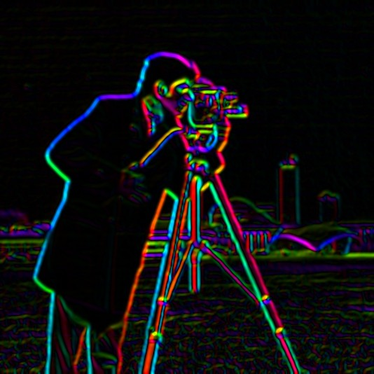
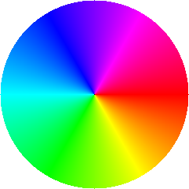
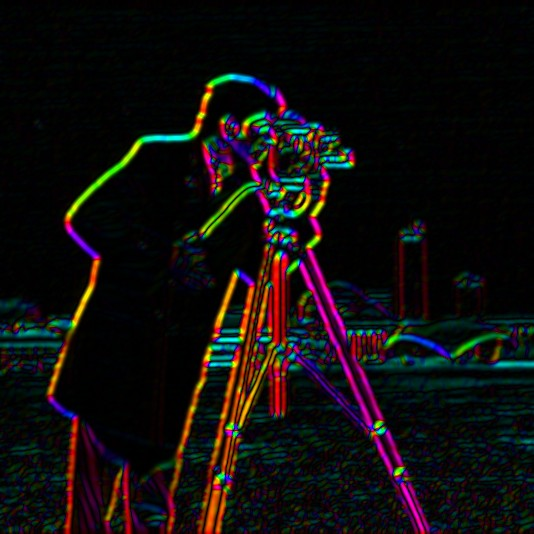
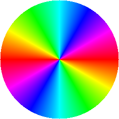
2.1 Image "sharpening"
A Gaussian blur keeps the low frequencies. Subtracting the blurred image from the original leaves what the blur removed: the high frequencies, the edges and fine detail. Adding a multiple α of that detail back makes edges steeper, which reads as sharper:
f + α(f − f * g) = f * ((1 + α) e − α g)
where e is the unit impulse, the kernel that leaves an image unchanged. The
right-hand side is the unsharp mask filter: a single kernel, a tall spike at the centre sitting
in a shallow negative moat. Applied as one convolution it matches the three-step version to
1.8×10−15. Everything below uses σ = 2 for the blur.
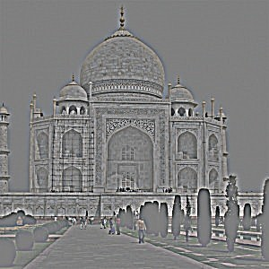
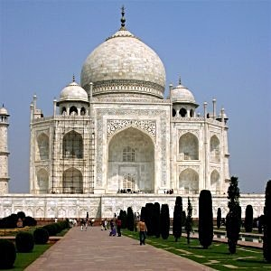

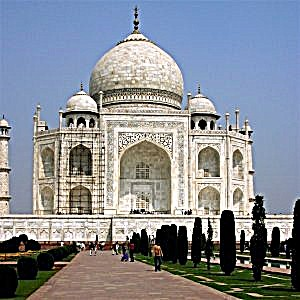
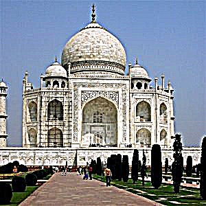
Small α makes the carving on the facade and the edges of the arches crisper. Large α overshoots: every edge gets a light halo on its bright side and a dark one on its shadow side, since the negative moat of the kernel subtracts neighbours. The halos show most around the dark cypress trees against the pale path, and at α = 4 the flat sky picks up grain that was always there but too faint to see. Even at α = 1, 9% of the pixel values land outside [0, 1] and have to be clipped: that is the overshoot in numbers.
The same filter on a photo of my own, a parking lot with palms against a clear sky, where the fronds and the thin wires of the sign are the high-frequency detail:

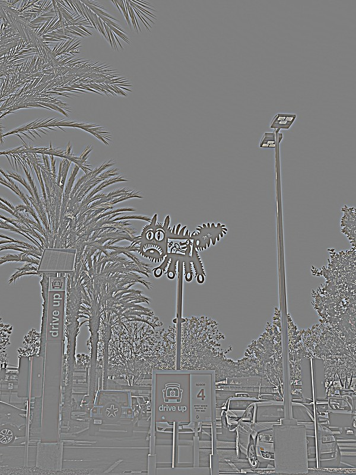
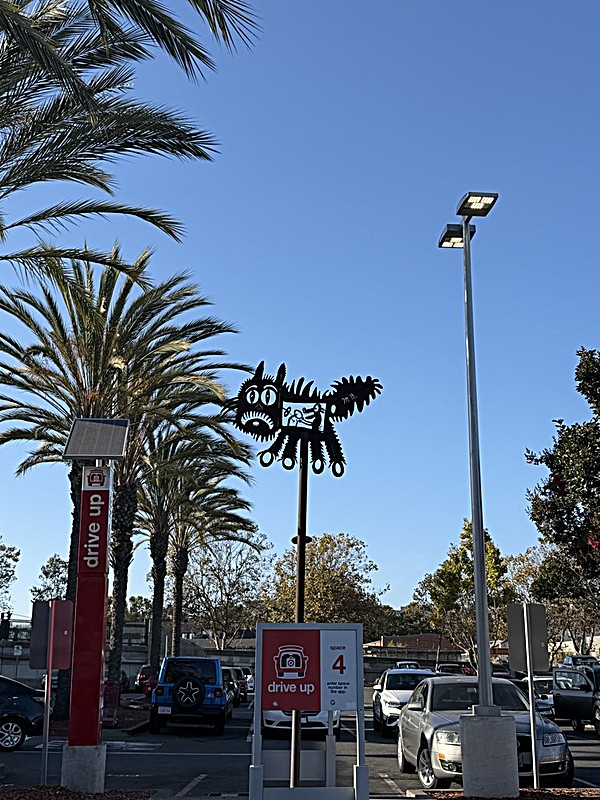
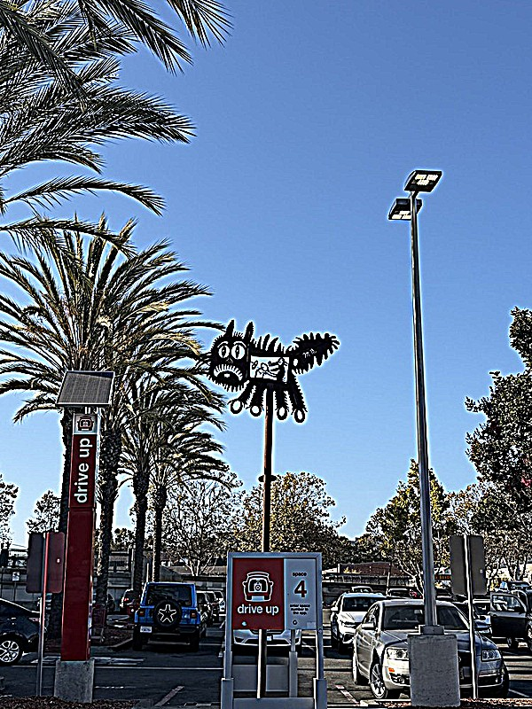
Evaluation: blur a sharp image, then sharpen it
To see what sharpening actually recovers, I took a sharp image, blurred it with σ = 2, and sharpened the blurred copy with the same σ and several α. The original is the ground truth, so I can measure the error with PSNR (peak signal-to-noise ratio, 10·log10(1 / mean squared error), higher is closer).
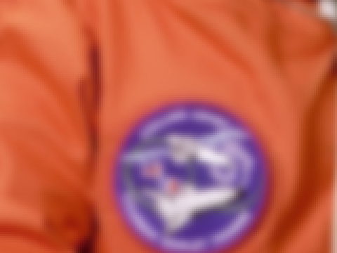
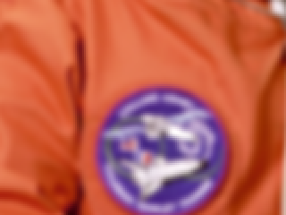
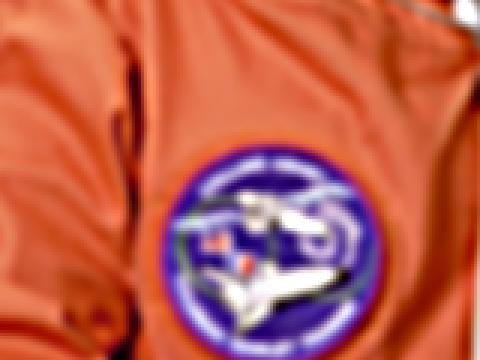
| image | PSNR vs original |
|---|---|
| blurred, σ = 2 | 24.99 dB |
| resharpened, α = 0.5 | 25.92 dB |
| resharpened, α = 1 | 26.72 dB |
| resharpened, α = 2 | 27.56 dB |
| resharpened, α = 4 | 25.90 dB |
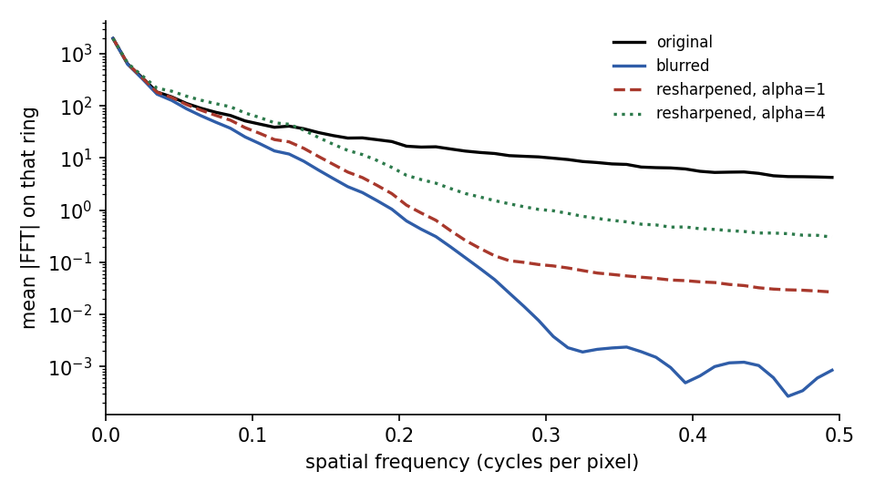
Sharpening helps, but it does not restore the original. PSNR rises from 25.0 dB to 27.6 dB at α = 2 and falls again for larger α, as the halos start costing more than the extra contrast gains. Visually the resharpened patch has firmer outlines around the shuttle and the flag, but the small lettering around the rim of the patch is not coming back at any α. The spectrum says why. Blurring multiplied every frequency by the Gaussian's response, which for σ = 2 is under 20% at 0.15 cycles per pixel and under 1% by 0.25, so the finest detail is essentially gone, and what little survives sits near the level of JPEG noise. Unsharp masking can only rescale what is still there: it lifts the middle band, where the blurred curve sits below the original, back towards it, and at large α overshoots it. It cannot create the fine lettering from nothing. Sharpening is a contrast boost for mid-to-high frequencies, not an undo button.
2.2 Hybrid images
A hybrid image is the low frequencies of one picture plus the high frequencies of another (Oliva, Torralba and Schyns, 2006). Close up the eye resolves fine detail and the high-frequency image dominates; from far away, or small on screen, that detail is below what the eye can resolve and only the smooth low-frequency picture is left. The recipe:
- Align. I click the two eye centres in each image; two points fix a scale, a rotation and a translation, and the low-frequency image is warped so its eyes land on the other image's eyes. I always warp the low-frequency image, because it is about to be blurred anyway, so resampling it costs nothing that will be visible; the high-frequency image, whose fine detail matters, is never resampled.
- Low-pass the first image with a Gaussian of standard deviation σlow.
- High-pass the second with impulse minus Gaussian, that is the image minus its own blur at σhigh.
- Add them.
The cutoff frequency is where a filter's gain crosses one half. A Gaussian of standard deviation σ pixels has frequency response exp(−2π2σ2f2), which equals 0.5 at f ≈ 0.187 / σ cycles per pixel. So the low-pass cutoff is 0.187/σlow and the high-pass cutoff is 0.187/σhigh. σlow has to be larger than σhigh, so that the low-pass cutoff sits below the high-pass one; otherwise the band in between belongs to both images at full strength and neither reading wins at any distance.
| hybrid | size | σlow | low cutoff | σhigh | high cutoff |
|---|---|---|---|---|---|
| Derek + Nutmeg | 540 × 787 | 7 | 0.027 (14) | 4 | 0.047 (25) |
| astronaut + mandrill | 512 × 512 | 6 | 0.031 (16) | 3 | 0.062 (32) |
| dog + cat | 451 × 292 | 5 | 0.037 (17) | 3 | 0.062 (28) |
Derek and Nutmeg
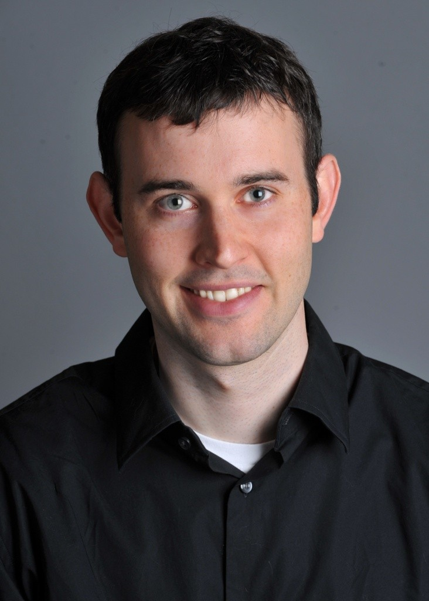
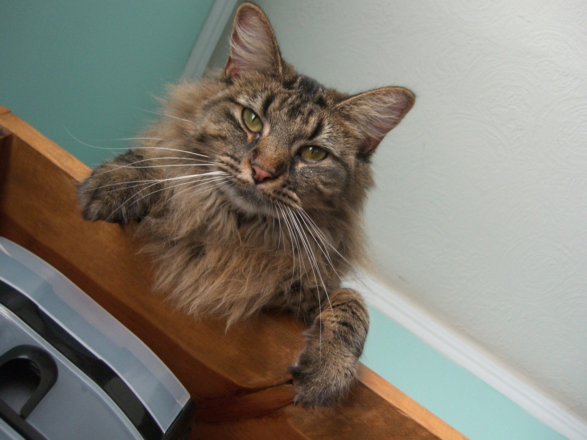
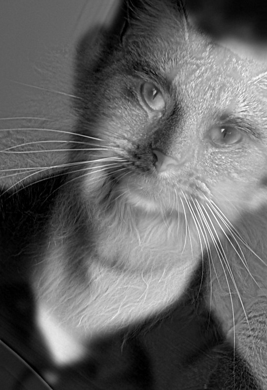
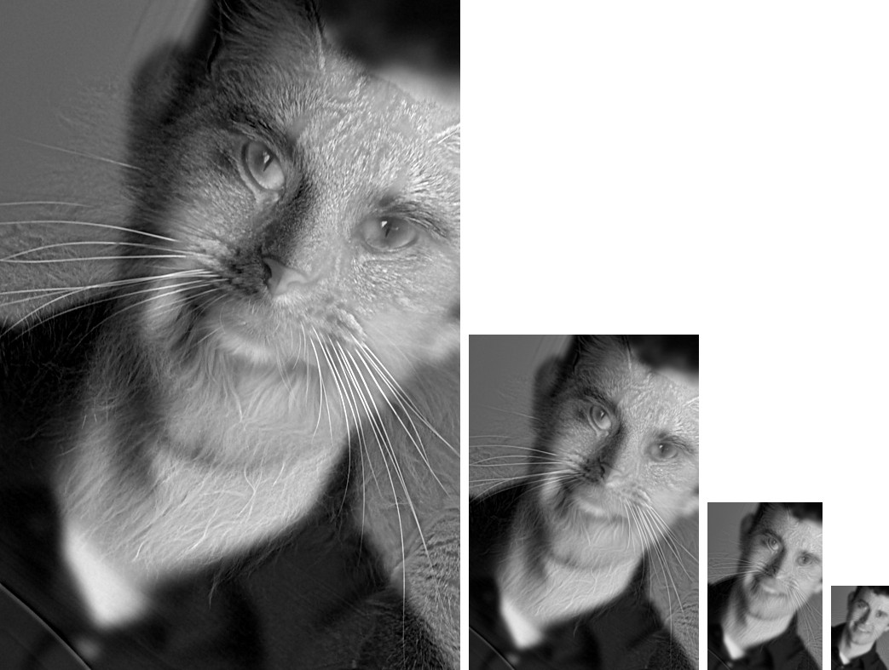
My favourite, step by step: an astronaut and a mandrill
Eileen Collins's official NASA portrait supplies the low frequencies and a mandrill the high ones. The two faces are very different in size: the mandrill's eyes are 161 pixels apart and the astronaut's 44, so the astronaut is scaled up by 3.66 to match. That would be a problem for a high-pass image, but not for a low-pass one.
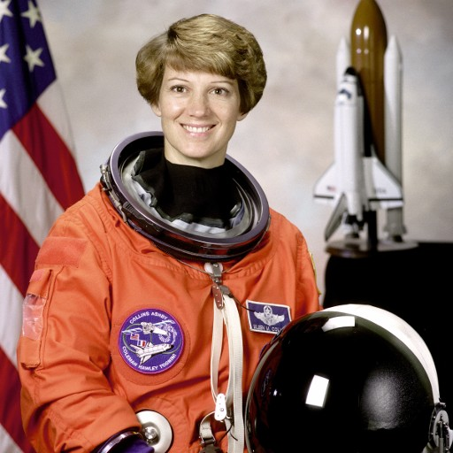


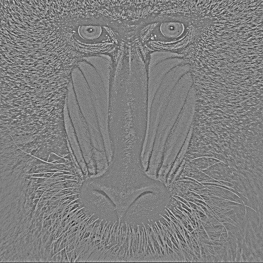
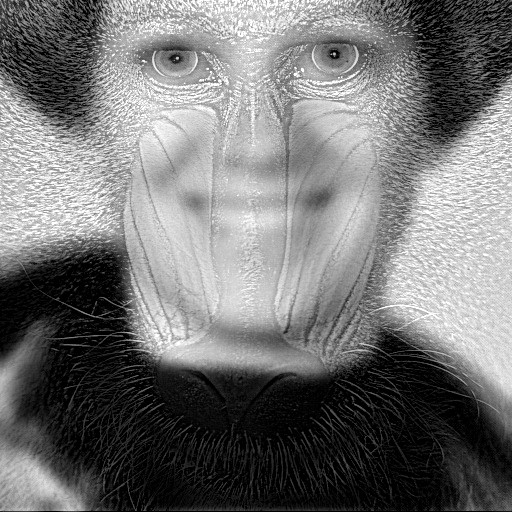
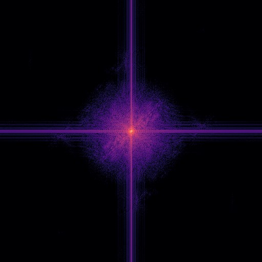
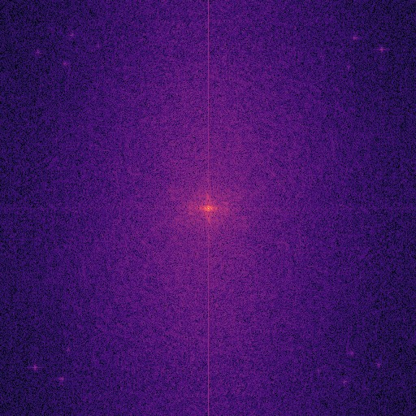
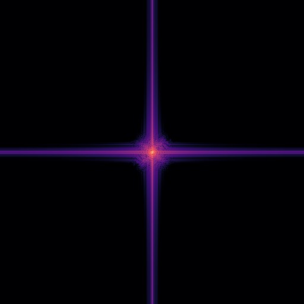
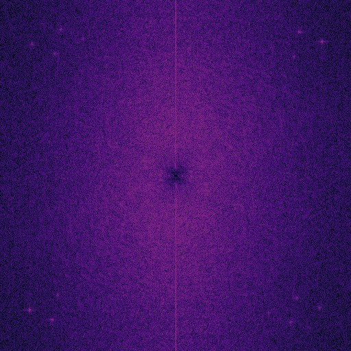
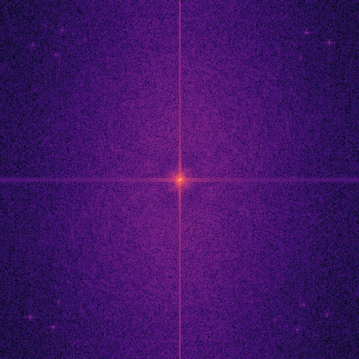
The spectra use np.log(np.abs(np.fft.fftshift(np.fft.fft2(image)))), all on one
shared colour scale, with the zero frequency in the centre. The mandrill's fur gives it energy
far out towards the corners; the upscaled astronaut is already concentrated near the centre.
Low-passing leaves only a small central blob. High-passing carves a dark hole out of the middle
and keeps the rest. The hybrid's spectrum is the union: the astronaut's centre surrounded by
the mandrill's outer ring. The bright horizontal and vertical lines through the centre are not
image content: the FFT treats the image as a tile that repeats, and the jump where the right
edge meets the left, and the top meets the bottom, shows up along the axes.
Choosing the cutoffs

At σlow = 3 the astronaut keeps the outlines of her teeth and eyelids, which compete with the mandrill up close, so the image reads as a face with fur painted on it rather than as a mandrill. At 12 she is too blurred to be recognisable even from far away. At 6 her features survive as soft shading while everything sharp belongs to the mandrill. For the high-pass I went the other way: σhigh = 3 keeps the fur, the eye rims and the grooves along the muzzle, and anything larger starts letting the mandrill's big shapes, the pale cheek ridges, into the hybrid, where they fight the astronaut at a distance. Even at 3 the outlines of the cheek ridges stay faintly visible from a moderate distance: they are strong, long edges, and an edge that long has energy reaching down towards the low-pass band, where the two filters overlap.
Cat up close, dog from afar
Bells and whistles: colour
Four versions of the favourite: both components gray, colour only in the low frequencies, colour only in the high frequencies, and colour in both.

Colour works best in the low-frequency component. Skin tone and the warm hair make the astronaut readable from further away, and they do not interfere up close, because colour spread smoothly over large areas is exactly the kind of signal the eye treats as background. Colour in the high-frequency component helps much less than one might expect from a creature as colourful as a mandrill. Its blue cheeks and red nose are large, smooth regions, so they are low-frequency content and the high-pass throws them away; what survives is thin coloured fringes along edges. Measured as the share of each component's variation that is colour rather than brightness, the high-pass mandrill carries 12% and the low-pass astronaut 4%. The mandrill's number is larger, but on screen it is those fringes, which read as noise up close rather than as the mandrill's colouring. Colour in both looks best from a distance and a little muddier up close, so my pick is colour in the low frequencies only.
2.3 Gaussian and Laplacian stacks
A Gaussian pyramid blurs and halves the image again and again. A stack does the blurring without the halving, so every level stays full size. The level-to-level blur has to grow for the stack to behave like a pyramid: in a pyramid, one pixel at level i covers 2i original pixels, so the effective blur doubles each level. I set level i to a total blur of σ = 2·2i−1 (level 0 is the image itself). Applying the same small Gaussian again and again would not do this, because blurs add in variance, so n passes of σ only reach σ√n. Each level is therefore made from the previous one with just the extra blur needed, √(σi2 − σi−12). All of this uses my own Gaussian blur; no pyramid functions from any library.
Each Laplacian level is the difference of two neighbouring Gaussian levels, Li = Gi − Gi+1, which is a band of frequencies roughly one octave wide. The last level is the blurriest Gaussian itself, so that summing all the Laplacian levels telescopes back to the original image; for both the apple and the orange the reconstruction error is 1.1×10−16. I use 5 blurred levels (σ up to 32) for the 300×300 oraple images and 6 (σ up to 64) for the larger images.


Gaussian and Laplacian stacks of the apple (top) and orange (bottom). The Laplacian bands are signed and shown with mid gray as zero, each stretched to its own range so the faint fine bands are visible.
Recreating Szeliski's Figure 3.42
The figure shows the blend from the next part taken apart by frequency. Each row is one Laplacian level: level 0 (fine detail), 2 (middle) and 4 (coarse). The left column is the apple's band weighted by its side of the mask, the middle is the orange's band weighted by the other side, and the right is their sum. The bottom row adds up all levels of each column: the masked apple, the masked orange and the finished oraple.
(a)–(c)
(d)–(f)
(g)–(i)
(j)–(l)
The rows show the idea behind the whole method. In the fine band the seam between apple and orange is a sharp line, because the mask at that level is barely blurred. In the coarse band the two halves fade into each other over most of the image width, because the mask at that level is heavily blurred. Fine detail is switched over quickly, so the apple's smooth skin and the orange's dimpled peel do not get mixed into a ghostly double texture; coarse colour is switched over slowly, so there is no visible step from red to orange.
2.4 Multiresolution blending
Following the lecture's notation, with A and B the two images and m the mask (1 where B should show), every Laplacian level is blended separately and the results are added up:
lk = lkA(1 − mk) + lkB mk
where mk is level k of the mask's own Gaussian stack, built with the same blur schedule as the images. With pyramids, the downsampling and upsampling would blur an abrupt seam on their own; with stacks nothing does, so the mask's Gaussian stack is what provides the smooth transition at each level. I also blur the mask by σ = 1 before level 0, so the finest band does not switch over within a single pixel. Colour images are blended one channel at a time with the same mask.
The oraple

The single soft mask shows why one transition width cannot work. Wide enough to hide the colour change, it is also wide enough that the apple's smooth skin and the orange's peel overlap in a band down the middle, where the texture looks like neither. The multiresolution blend changes colour just as gradually but switches texture within a few pixels.
A straight seam of my own: half astronaut, half mandrill

This one is harder than the oraple, because the two halves have little in common: skin against fur, and a red muzzle right on the seam. The blend removes the step in brightness and colour along most of the line, and the eyes line up because of the alignment. Where the astronaut's black collar meets the mandrill's light fur, the contrast is too large for any smooth transition to hide completely, and the seam is still visible there.
An irregular mask: Starry Night over a parking lot
The base is a photo of mine: palms, a light pole and a cartoon sign against a clear blue sky. The mask is the sky. Sky pixels are clearly bluer than they are red and fairly bright, so a colour test finds them, with two clean-up steps. A blue and white parking sign near the bottom also passes the colour test, so I keep only candidate pixels in the upper 76% of the frame, plus anything connected to the top edge. Patches of sky seen through the palm fronds are enclosed by leaves and not connected to the top, which is why the position rule is needed rather than connectivity alone. Tiny specks are dropped and pinholes filled. The mask covers 50% of the photo, and follows individual fronds, which no straight line could.

Close up the two are a genuine trade-off, not a clear win. The hard cut keeps every frond and the light pole crisp, but its edges are jagged, and wherever the colour test left a mixed pixel outside the mask, a pale fringe of the photo's real sky outlines the leaves and the tops of the trees. The blend removes those fringes and the jaggedness, because the fine band is switched at the frond edges and the coarse bands smooth over the leftovers. The cost is that thin foreground objects take on the painting's colour: the light pole and the thinnest fronds are only a few pixels wide, far narrower than the blur on the mask at the coarse levels, so the painting's deep blue leaks into them and they come out darker and bluer than in the photo. Multiresolution blending assumes that each region is wide compared with the transition at every level, and a lamp post against the sky breaks that assumption.
The blend taken apart
The same layout as Figure 3.42, for the Starry Night blend: photo band times (1 − m), painting band times m, and their sum, at Laplacian levels 0, 2, 4 and 6, then all levels added up.
At level 0 the mask still follows every frond, and the two images' fine detail is cut cleanly along the leaf edges. By level 6, the low-frequency residual, the mask is so blurred that the two images' overall colour is mixed across a large part of the frame, which is what lets the painting's deep blue and the photo's lighter sky meet without a visible line.
Bells and whistles: colour
All of the blends above are already in colour, blending the three channels separately with one shared mask stack. The grayscale version shows what colour contributes. In gray the blend is plausible but flat; the effect depends on the painting's yellows and cobalt blues against the photo's real colours. Because the coarsest levels carry the colour and have the widest mask, the multiresolution blend is precisely the right tool for hiding colour differences, and blending in colour costs nothing extra beyond running each channel through the same stacks.
What I learned
The most important thing I learned is that "how big is this detail" is a better question than "what is this detail" for a surprising amount of image processing. Edge detection, sharpening, hybrids and blending all turned out to be the same move: split the image into frequency bands, then treat each band differently. The hybrid images made it concrete for me. The same pixels read as two different pictures depending only on which band the viewer can resolve. The blends taught me the limit of the same idea: giving each band a seam as wide as its own features works beautifully until an object in the picture is narrower than the widest seam, like the light pole in my Starry Night blend.
Image sources. Course images: cameraman, Taj Mahal, Derek and Nutmeg, apple and orange. Astronaut (Eileen Collins, NASA, public domain) and the cat (Chelsea) from the scikit-image sample data; mandrill, dog and The Starry Night from the OpenCV sample data. The portrait and the parking lot are my own photos.